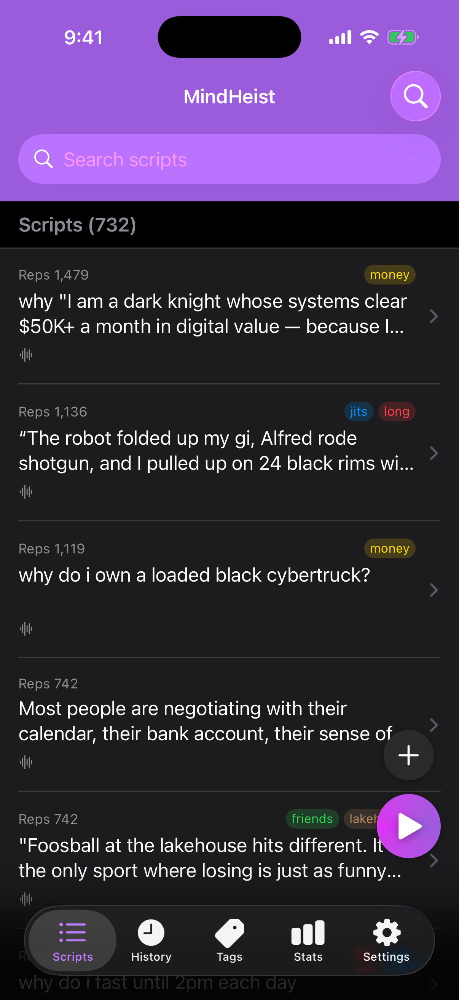
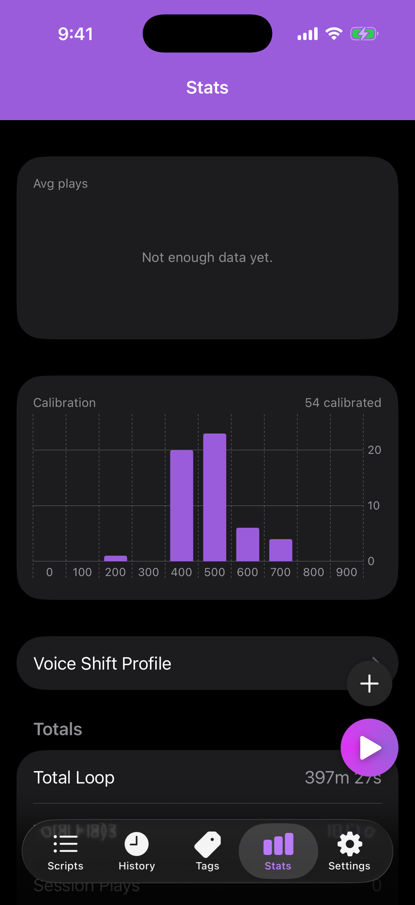

Lofty question
Why is follow-through starting to feel automatic?
Rep 1 · take
iOS + macOS
With repetition you aim the subconscious where you want it to go. A short idea, in your voice, on an interval, under the music. Long-term trim-tab behaviour change, counted in reps.
Lofty question
Why is follow-through starting to feel automatic?
Write a short idea, or a lofty question the mind has to work on. Record it in your voice. That is the payload.
Leave the music running. Scripts mix on top, on an interval you set — 30 seconds, a minute, random gaps. Every listen is a rep.
Over weeks the count is the point. Small inputs, held, turn the course. Stats exist so you can see the trim tab moving.
Under the music
MindHeist does not pause Spotify, Apple Music, a lecture, or silence. It is a mixable source. You set the gap — 30 seconds, or whatever you actually use — and the line comes through, then the bed continues.
Work that does not need all of your focus. The track stays. The question shows up in the gaps.
Meditation with a voice that is yours, not a stranger on a recording.
Loop until you drop. A sleep timer stops it when you want the night quiet.
How to write one
A statement like “I am disciplined” starts an argument. A question does not. The mind tries to answer it, and that search is the work.
Record the question. Loop it. Leave the argument out of the take. Lofty is useful: if the question is slightly ahead of you, the search still has somewhere to go.
A trim tab is a tiny flap on a rudder. A light touch there moves the rudder, and the rudder moves the hull. A twelve-second recording, played two hundred times, is that flap.


Reps
Every Idea holds the line, the recording, tags, and a rep count that increments when you listen. History is the log. Stats is the chart — week, month, quarter, year.
No streak. No badge. How many times the idea actually reached you.
A daily time and a playlist. The notification starts both. Overnight, scripts can keep firing on an interval until the playlist takes over. iPhone only.
Scripts, audio, tags, and counts sync with CloudKit. No MindHeist account. Your Apple ID is enough.
Not on the App Store yet. Scripts, History, Noise, Stats, and Settings on both. Rise & Shine, music bed, and sleep timer on iPhone.